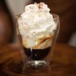

Cappuccino

Ly cà phê sữa đậm đà thời thượng! Một chút đậm đà hơn so với Latte, Cappuccino của chúng tôi bắt đầu với cà phê espresso, sau đó thêm một lượng tương đương giữa sữa tươi và bọt sữa cho thật hấp dẫn. Bạn có thể tùy thích lựa chọn uống nóng hoặc dùng chung với đá.
Espresso

Đích thực là ly cà phê espresso ngon đậm đà! Được chiết xuất một cách hoàn hảo từ loại cà phê rang được phối trộn độc đáo từ những hạt cà phê Robusta và Arabica chất lượng hảo hạng.
Espresso Con Panna
Espresso Con Panna là một loại thức uống được kết hợp hài hòa giữa cà phê espresso chính hiệu và lớp kem lạnh whipped cream. Nếu bạn không chắc chắn để thưởng thức một cốc espresso nguyên bản thì Espresso Con Panna chính là sự lựa chọn hoàn hảo. Thưởng thức Espresso Con Panna sẽ cho bạn những cảm nhận thật thú vị ngay từ đầu lưỡi khi nếm vị béo ngọt của kem tươi ,tinh tế đến phần nền espresso thơm lừng mãnh liệt. Espresso Con Panna không quá cầu kỳ phức tạp nhưng nó là một phần không thể thiếu trong văn hóa của Italia.